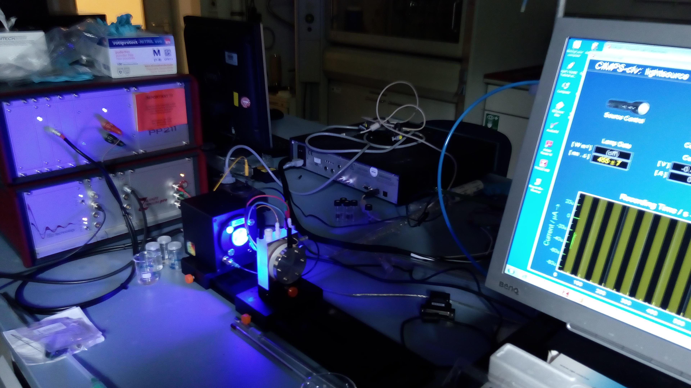

Portfolios
Academic Research

Photo-reactor Construction for Solar Fuels
University of Paris, France (2020-2021)
Non-aqueous Redox Flow Batteries
University of Nottingham (2014-2018) and Ulm University (2018-2020)

Photo-electrodes for water-splitting
Ulm University & FSU Jena, Germany (2018-2020)
Charging Molecules inside Nanotubes
Images adapted from J. Jordan et al.Advanced Materials 2019 page 1904182
University of Nottingham, UK (2017-2018)